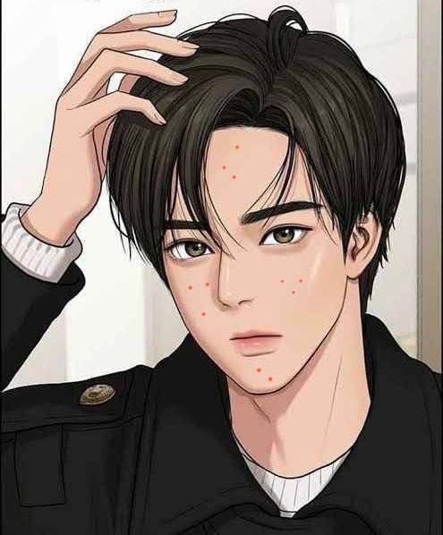

Let Me Introduce...
Nama : Abraham Raymond
Minat dan Bakat : Dunia Musik dan Olahraga
Hobby : Bermain Basket dan Gitar
Role Model : B.J. Habibie
Alasan : Bayak hal yang dapat dikagumi dari sosoknya. Tapi yang harus dicontoh dari beliau adalah sikap visionernya. Beliau selalu optimis dalam merealisasikan mimpinya. Salah satu buktinya adalah keberhasilan dalam mewujudkan visi dan misinya pada bidang industri teknik dan otomotif. Bahkan beliau berhasil menciptakan teori-teori yang dinamakan dengan Faktor Habibie, Teorem Habibie, dan Metode Habibie.
Motivasi : I know it's going to be hard to fight all the insecurities because I’m trying my best to work on this too! But I'm here to remind everyone that we are all human and it's okay to have imperfections & Let's start accepting and love yourself more #selflove.